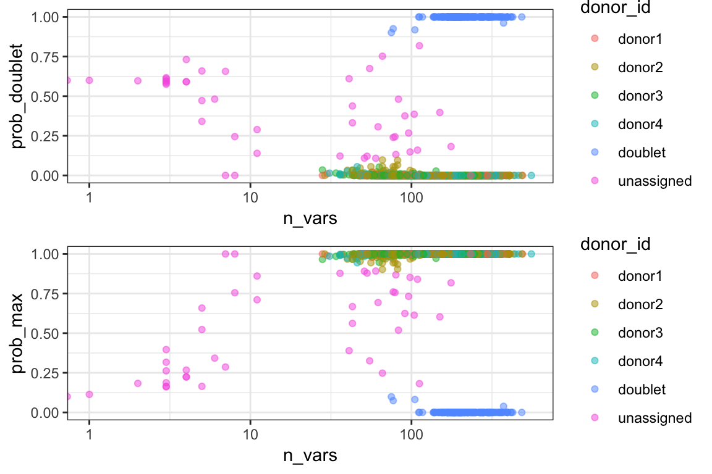

Using simulation to evaluate experiment designs
Last updated: 2019-01-17
workflowr checks: (Click a bullet for more information)-
✖ R Markdown file: uncommitted changes
The R Markdown is untracked by Git. To know which version of the R Markdown file created these results, you’ll want to first commit it to the Git repo. If you’re still working on the analysis, you can ignore this warning. When you’re finished, you can runwflow_publishto commit the R Markdown file and build the HTML. -
✔ Environment: empty
Great job! The global environment was empty. Objects defined in the global environment can affect the analysis in your R Markdown file in unknown ways. For reproduciblity it’s best to always run the code in an empty environment.
-
✔ Seed:
set.seed(20181222)The command
set.seed(20181222)was run prior to running the code in the R Markdown file. Setting a seed ensures that any results that rely on randomness, e.g. subsampling or permutations, are reproducible. -
✔ Session information: recorded
Great job! Recording the operating system, R version, and package versions is critical for reproducibility.
-
Great! You are using Git for version control. Tracking code development and connecting the code version to the results is critical for reproducibility. The version displayed above was the version of the Git repository at the time these results were generated.✔ Repository version: 9c547b0
Note that you need to be careful to ensure that all relevant files for the analysis have been committed to Git prior to generating the results (you can usewflow_publishorwflow_git_commit). workflowr only checks the R Markdown file, but you know if there are other scripts or data files that it depends on. Below is the status of the Git repository when the results were generated:
Note that any generated files, e.g. HTML, png, CSS, etc., are not included in this status report because it is ok for generated content to have uncommitted changes.Ignored files: Ignored: .DS_Store Ignored: .Rhistory Ignored: .Rproj.user/ Ignored: data/.DS_Store Ignored: docs/.DS_Store Untracked files: Untracked: analysis/simulation.Rmd Untracked: data/GT_val.genome1K.donors20.rds Untracked: data/demux.ctrl.AnD.gm1K.rds Untracked: data/simu.geneASE.example.rds Unstaged changes: Modified: README.md Modified: analysis/_site.yml Modified: analysis/about.Rmd Modified: analysis/examples.Rmd Modified: analysis/index.Rmd
In this totorial, we will show how to use donor_read_simulator and other functions in cardelino package to evaluate the designs of multiplexed scRNA-seq experiments, including number of total reads, number of pooled donors, and loading cells.
The experiment design is important since the demultiplexing is more difficult when genotype is not available. Normally, given the genotype, especially the ones with high large volumn and high accuracy from genotype array or genome / exome sequencing, it is relatively easy to demultiplex pooled samples in a wide range of experiment designs.
Load packages and data
First, let us load packages and have a look of the simulation seed data.
All data needed is located in this package. In the data folder, there are two files to use:
demux.ctrl.AnD.gm1K.rds: containing two matrices:AandD, for the read counts of alternative alleles and sequencing coverage or depth in one control sample from demulet paper: 18005 SNPs aross 14619 cells.GT_val.genome1K.donors20.rds: containing the genotype dataGTfor 20 donors from thousands genome project. For more 100-donor data set, you can download here.
# setwd("/Users/huangh/MyGit/vireo-manual")
cell_dat <- readRDS("data/demux.ctrl.AnD.gm1K.rds")
GT_dat <- readRDS("data/GT_val.genome1K.donors20.rds")
print(paste("cell data:", nrow(cell_dat$D), "SNPs", ncol(cell_dat$D), "cells."))[1] "cell data: 18005 SNPs 14619 cells."print(paste("missing rate:", round(mean(cell_dat$D == 0), 5)))[1] "missing rate: NA"print(paste("donor GT data dimentions:", t(dim(GT_dat$GT))))[1] "donor GT data dimentions: 254086" "donor GT data dimentions: 20" print(head(GT_dat$GT)) HG00256 HG00139 HG00173 HG00261 HG00110 HG00136 HG00143
1_13550_G_A 0 0 1 0 0 0 0
1_69428_T_G 0 0 1 0 0 0 0
1_69761_A_T 0 0 0 0 0 0 0
1_69897_T_C 2 1 1 2 1 2 2
1_138484_A_G 0 0 0 0 0 0 0
1_138593_G_T 0 0 0 0 0 0 0
HG00106 HG00255 HG00178 HG00101 HG00185 HG00262 HG00189
1_13550_G_A 0 0 0 0 0 0 0
1_69428_T_G 0 0 0 0 0 1 0
1_69761_A_T 0 0 0 2 0 0 0
1_69897_T_C 2 2 2 2 2 1 1
1_138484_A_G 0 0 0 0 0 0 1
1_138593_G_T 0 0 1 0 0 1 0
HG00234 HG00125 HG00117 HG00102 HG00133 HG00118
1_13550_G_A 0 0 0 0 0 0
1_69428_T_G 0 1 0 0 0 0
1_69761_A_T 0 0 2 0 0 0
1_69897_T_C 2 2 2 1 2 1
1_138484_A_G 0 0 0 0 0 0
1_138593_G_T 0 0 0 0 0 0Set the experiment design parameters
Set the experiment parameters here. Let us try a typical pooled experiment data with 5000 cells from 4 donors. Customise it to your design.
n_cells <- 5000
n_donors <- 4
doublet_rate <- n_cells / 100000
donor_fractions <- rep(1 / n_donors, n_donors)
gene_ASE <- TRUE ## gene specific allelic expressionBefore generating the reads, we need to down sample the donor genotype data to the given number of donors and the given number of variable SNPs (18,005 here). Given the depth seed matrix, and the known genotype of the donors, the simulator generates the reads by the following three steps:
- Uniformly sample the depths profiles
Dfrom cells in the seed matrixD_input. Note, it only samples the column, i.e., cells. If needed, it can shuffle the row, i.e., SNPs beforehand. - Generate the binomial parameters for the three genotypes: 0 (hom_ref), 1 (het) and 2 (hom_alt). By default, it follows a beta distribution: \[p_0 \sim \beta(0.3, 29.7), p_1 \sim \beta(3.0, 3.0), p_2 \sim \beta(29.7, 0.3)\] If the parameter
gene_ASEis TRUE, we generate the parameters [p_0, p_1, p_2] for each SNP individually. Also, this beta distribution can be custermised, though it is already optimised in common case. - Once obtained the depth of each SNP in each cell, and its binomial parameter, we can directly sample the read counts for the alternative alleles, i.e. matrix
A
# random seed to keep it reproducible
set.seed(0)
# Depths seed for simulation
D_input <- cell_dat$D
# sample donors and remove variants that are the same in sampled donors
GT_use <- GT_dat$GT[, sample(ncol(GT_dat$GT), n_donors)]
GT_use <- GT_use[rowMeans(GT_use) != rowMax(GT_use), ]
# sub sample variants to the same number as D_input
idx_use <- sample(nrow(GT_use), nrow(D_input))
GT_use <- GT_use[idx_use, ]
row.names(GT_use) <- paste0("SNP", seq_len(nrow(GT_use)))
# generate simulated reads
dat_sim <- donor_read_simulator(GT_use, D_input, n_cell = n_cells,
gene_ASE = gene_ASE,
donor_size = donor_fractions,
doublet_rate = doublet_rate)
# save the simulated data if you want
# saveRDS(dat_sim, "data/simu.geneASE.example.rds")From the simulator, the output list variable contains randomly generated reads matrices A and D, as well as the ground truth of genotype GT and cell identity I_sim, and the binomial parameter p_sim.
Demultiplex with Viroe
Given the simulated data following the experiment design, we can demultiplex the data with Vireo without genotype reference.
ids <- vireo(cell_data = dat_sim, n_donor = n_donors)RUN1: 4 random initializations...
[,1] [,2] [,3] [,4]
n_iter 36.0 31.0 39.0 32.0
LBound -294289.1 -295659.3 -291249.9 -294230.2
RUN1: Search in 6 donors. Estimated sizes:
donor5 donor2 donor1 donor6 donor3 donor4
[1,] 1250.6 1199.6 1173.3 1093.3 32.8 1
RUN2: Tuning the largest 4 donors with genotype prior estimated from RUN1.
Finished in 49.93 sec.table(ids$assigned$donor_id)
donor1 donor2 donor3 donor4 doublet unassigned
1246 1195 1170 1200 155 34 fig_part1 <- ggplot(ids$assigned, aes(n_vars, prob_doublet,
colour = donor_id)) +
geom_point(alpha = 0.5) + scale_x_log10() + theme_bw()
fig_part2 <- ggplot(ids$assigned, aes(n_vars, prob_max, colour = donor_id)) +
geom_point(alpha = 0.5) + scale_x_log10() + theme_bw()
ggpubr::ggarrange(fig_part1, fig_part2, nrow = 2, align = "v")
Evaluate the performance of demultiplexing
Singlet assignment and doublet detection
First, let us evaluate the performance of Vireo in singlet assignment and doublet detection. By default, we use the prob_max >= 0.9 (i.e., the highest probability assigning to a donor) for confident assignment, and use prob_doublet >= 0.9 (i.e., the summarized probability of a doublet) for confident doublet detection.
The singlet assignment and doublet detection can be visualised as follow.
ids$assigned$color_id <- ids$assigned$donor_id
ids$assigned$color_id[ids$assigned$color_id != "doublet" &
ids$assigned$color_id != "unassigned"] <- "singlet"
ids$assigned$color_id[ids$assigned$color_id == "unassigned"] <- "unsure"
ids$assigned$Truth <- rep("singlet", ncol(ids$D))
ids$assigned$Truth[rowSums(dat_sim$I_sim > 0) > 1] <- "doublet"
ggplot(ids$assigned, aes(n_vars, prob_max,
colour = color_id, shape=Truth)) +
geom_point(alpha = 0.7) + xlim(0, 400) +
scale_color_manual(values = c("#55C667FF", "#39568CFF", "gray40"),
name = "Assigned") +
scale_shape_manual(values = c(2, 1), name = "True label") +
scale_y_continuous(breaks = seq(0, 1, 0.2))
Addtionally, we can explore the overall performance by precision-recall curve with varying the threshold. The Area Under the Precision-Recall Curve (AUPRC) can be used as a summarised score for the overall performance.
ass_db <- assign_scores(ids$prob, dat_sim$I_sim) [,1] [,2] [,3] [,4]
[1,] 2 3 4 1
[1] "181 samples have multiple labels."print(paste("Doublet, cutoff = 0.9: Recall =",
round(ass_db$df_db$Recall[ass_db$df_db$cutoff == 0.1][1], 3),
"Precision = ",
round(ass_db$df_db$Precision[ass_db$df_db$cutoff == 0.1][1], 3)))[1] "Doublet, cutoff = 0.9: Recall = 0.856 Precision = 1"print(paste("Doublet, cutoff = 0.1: Recall =",
round(ass_db$df_db$Recall[ass_db$df_db$cutoff == 0.9][1], 3),
"Precision = ",
round(ass_db$df_db$Precision[ass_db$df_db$cutoff == 0.9][1], 3)))[1] "Doublet, cutoff = 0.1: Recall = 0.867 Precision = 0.835"ass_db$df_sg <- rbind(ass_db$df_sg, c(0, 1, 0))
db_name = paste0("Doublet:", round(ass_db$AUC_db, 4))
sg_name = paste0("Singlet:", round(ass_db$AUC_sg, 4))
df <- as.data.frame(
rbind(data.frame(ass_db$df_db,
AUPRC = rep(db_name, nrow(ass_db$df_db))),
data.frame(ass_db$df_sg,
AUPRC = rep(sg_name, nrow(ass_db$df_sg)))))
ggplot(df, aes(x = Recall, y = Precision)) +
geom_line(aes(color = AUPRC)) +
geom_point(aes(color = AUPRC), size=2) +
scale_color_manual(values = c("#55C667FF", "#39568CFF")) +
xlab("Detection rate (recall)") +
scale_x_continuous(breaks = seq(0,1,0.2)) +
scale_y_continuous(breaks = seq(0,1,0.2)) +
ylab("Precision")
Genotype estimate
Then, we can evaluate the accuracy of genotype estimate, by comparing the input genotype and estimated GT_prob or GT. There are three genotypes, and they have different frequencys, so we will evalate them separately.
# freqency of input genotype and estimated genotype
table(dat_sim$GT)
0 1 2
37423 24815 9782 table(ids$GT)
0 1 2
43521 14120 14379 # rearange the vireo estimated donors to match the input donors
col_idx <- colMatch(dat_sim$I_sim, ids$prob)
t(col_idx) [,1] [,2] [,3] [,4]
[1,] 2 3 4 1# Estimated genotype by using highest probability
GT_probMax <- matrix(rowMax(ids$GT_prob), nrow = nrow(ids$D))
GT_val <- matrix(rowArgmax(ids$GT_prob) - 1, nrow = nrow(ids$D))
# rank SNPs by total reads, and categorised by genotype
df.GT <- data.frame(SNP = rep(row.names(dat_sim$GT), ncol(dat_sim$GT)),
donor = rep(ncol(dat_sim$GT), each = nrow(dat_sim$GT)),
GT = c(dat_sim$GT),
GT_est = c(GT_val[, col_idx]),
correct = c(GT_val[, col_idx] == dat_sim$GT),
GT_prob = c(GT_probMax[, col_idx]),
expr_times = matrix(((ids$D > 0) %*% ids$prob)[, col_idx]),
total_read = matrix((ids$D %*% ids$prob)[, col_idx]))
head(df.GT, 10) SNP donor GT GT_est correct GT_prob expr_times total_read
1 SNP1 4 1 1 TRUE 0.9863636 3.000000 3.000000
2 SNP2 4 0 0 TRUE 0.7991668 1.000000 1.000000
3 SNP3 4 1 0 FALSE 0.9992280 12.000000 12.000000
4 SNP4 4 0 0 TRUE 0.9992516 5.999995 5.999995
5 SNP5 4 0 0 TRUE 0.9999994 15.999974 15.999974
6 SNP6 4 1 1 TRUE 0.9999996 16.999953 16.999953
7 SNP7 4 1 1 TRUE 0.9999939 11.000000 11.000000
8 SNP8 4 0 0 TRUE 0.9418238 2.000000 2.000000
9 SNP9 4 2 2 TRUE 1.0000000 33.163673 44.163673
10 SNP10 4 0 0 TRUE 0.9984809 3.999954 4.999954library(viridis)
df.GT <- df.GT[order(df.GT$total_read, decreasing = TRUE), ]
Top_SNP <- c(10, 30, 100, 300, 1000, 3000, 10000, 24000, 37000)
df.out <- data.frame(Genotype = rep(c("hom_ref", "het", "hom_alt"),
each = length(Top_SNP)),
Top_list = rep(Top_SNP, 3),
GT_acc = rep(NA, length(Top_SNP) * 3),
UMI_count = rep(NA, length(Top_SNP) * 3))
# Calculate cummunitive accuracy
for (gt in c(0, 1, 2)) {
df.tmp <- df.GT[df.GT$GT == gt, ]
for (ii in seq_len(length(Top_SNP))) {
if (nrow(df.tmp) < Top_SNP[ii]) {
df.out$GT_acc[gt * length(Top_SNP) + ii] <- NA
df.out$UMI_count[gt * length(Top_SNP) + ii] <- NA
} else {
df.out$GT_acc[gt * length(Top_SNP) + ii] <-
mean(df.tmp$correct[1:Top_SNP[ii]])
df.out$UMI_count[gt * length(Top_SNP) + ii] <-
median(df.tmp$total_read[1:Top_SNP[ii]])
}
}
}
head(df.out) Genotype Top_list GT_acc UMI_count
1 hom_ref 10 1.0000000 5042.53943
2 hom_ref 30 1.0000000 2704.77746
3 hom_ref 100 1.0000000 1374.34376
4 hom_ref 300 0.9933333 415.44839
5 hom_ref 1000 0.9970000 95.95370
6 hom_ref 3000 0.9943333 28.99848# plot figure
ggplot(df.out, aes(x=Top_list, y=GT_acc)) +
geom_line(aes(color = UMI_count, shape = Genotype)) +
geom_point(aes(color = UMI_count, shape = Genotype), size=3) +
scale_color_viridis(option = "D", name = "UMI count", trans = "log10") +
scale_x_continuous(tran="log10") + ylim(0, 1) +
ylab("Genotype precision") + xlab("Top expressed variants")
Session information
sessionInfo()R version 3.5.2 (2018-12-20)
Platform: x86_64-apple-darwin15.6.0 (64-bit)
Running under: macOS Mojave 10.14.2
Matrix products: default
BLAS: /Library/Frameworks/R.framework/Versions/3.5/Resources/lib/libRblas.0.dylib
LAPACK: /Library/Frameworks/R.framework/Versions/3.5/Resources/lib/libRlapack.dylib
locale:
[1] en_GB.UTF-8/en_GB.UTF-8/en_GB.UTF-8/C/en_GB.UTF-8/en_GB.UTF-8
attached base packages:
[1] stats graphics grDevices utils datasets methods base
other attached packages:
[1] viridis_0.5.1 viridisLite_0.3.0 cardelino_0.2.6 ggpubr_0.1.7
[5] magrittr_1.5 ggplot2_3.1.0 knitr_1.20
loaded via a namespace (and not attached):
[1] nlme_3.1-137 bitops_1.0-6
[3] matrixStats_0.54.0 ggtree_1.12.7
[5] bit64_0.9-7 RColorBrewer_1.1-2
[7] progress_1.2.0 httr_1.3.1
[9] rprojroot_1.3-2 GenomeInfoDb_1.16.0
[11] tools_3.5.2 backports_1.1.2
[13] R6_2.3.0 DBI_1.0.0
[15] lazyeval_0.2.1 BiocGenerics_0.26.0
[17] colorspace_1.3-2 withr_2.1.2
[19] gridExtra_2.3 tidyselect_0.2.5
[21] prettyunits_1.0.2 bit_1.1-14
[23] compiler_3.5.2 git2r_0.23.0
[25] Biobase_2.40.0 DelayedArray_0.6.5
[27] rtracklayer_1.40.4 labeling_0.3
[29] scales_1.0.0 stringr_1.3.1
[31] digest_0.6.18 Rsamtools_1.32.2
[33] rmarkdown_1.10 R.utils_2.7.0
[35] XVector_0.20.0 pkgconfig_2.0.2
[37] htmltools_0.3.6 BSgenome_1.48.0
[39] rlang_0.3.1 RSQLite_2.1.1
[41] bindr_0.1.1 jsonlite_1.6
[43] BiocParallel_1.14.2 dplyr_0.7.8
[45] R.oo_1.22.0 VariantAnnotation_1.26.1
[47] RCurl_1.95-4.11 GenomeInfoDbData_1.1.0
[49] Matrix_1.2-15 Rcpp_1.0.0
[51] munsell_0.5.0 S4Vectors_0.18.3
[53] ape_5.1 R.methodsS3_1.7.1
[55] stringi_1.2.4 whisker_0.3-2
[57] yaml_2.2.0 SummarizedExperiment_1.10.1
[59] zlibbioc_1.26.0 plyr_1.8.4
[61] grid_3.5.2 blob_1.1.1
[63] parallel_3.5.2 snpStats_1.30.0
[65] crayon_1.3.4 lattice_0.20-38
[67] Biostrings_2.48.0 cowplot_0.9.4
[69] splines_3.5.2 GenomicFeatures_1.32.2
[71] hms_0.4.2 pillar_1.3.1
[73] GenomicRanges_1.32.7 biomaRt_2.36.1
[75] stats4_3.5.2 XML_3.98-1.15
[77] glue_1.3.0 evaluate_0.11
[79] treeio_1.4.3 gtable_0.2.0
[81] purrr_0.2.5 tidyr_0.8.2
[83] assertthat_0.2.0 tidytree_0.1.9
[85] survival_2.43-3 tibble_2.0.1
[87] pheatmap_1.0.12 rvcheck_0.1.0
[89] GenomicAlignments_1.16.0 AnnotationDbi_1.42.1
[91] memoise_1.1.0 IRanges_2.14.12
[93] workflowr_1.1.1 bindrcpp_0.2.2 This reproducible R Markdown analysis was created with workflowr 1.1.1